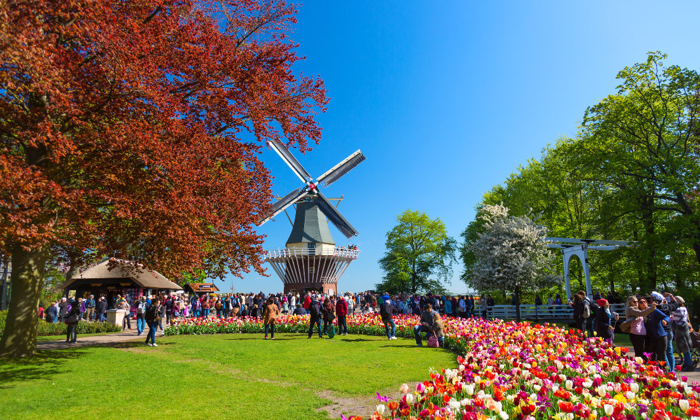
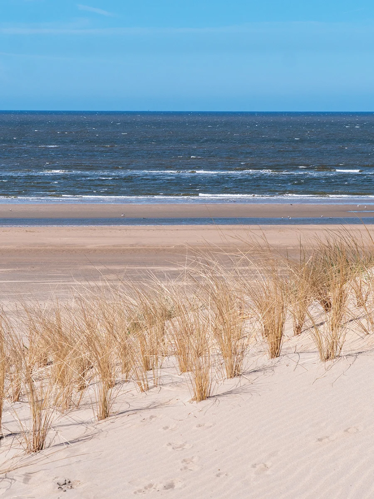

We’ll share some of our favourite places to visit and things to do nearby.

Keukenhof – the tulip festival
Keukenhof is a flower garden that hosts an annual tulip festival from mid-April to mid-May, although there are plenty of other flowers too (wikipedia).
You need to buy tickets on the official website. They apparently become available from mid-October.
Note: You need to book an arrival time slot, and these can sell out—especially for a weekend in early May—so book early-ish.

Bloemendaal beach
Bloemendaal is a nearby town, and the beach is very nice in that direction. You can park your bike and there are restaurants (and sometimes a van that sells Kibbeling: Dutch fish and chips).
The sea water in April-May is 6-15 deg C. We've invited at least one cold water enthusiast, so if you plan to take a dip the morning after, let us know, we may even join.